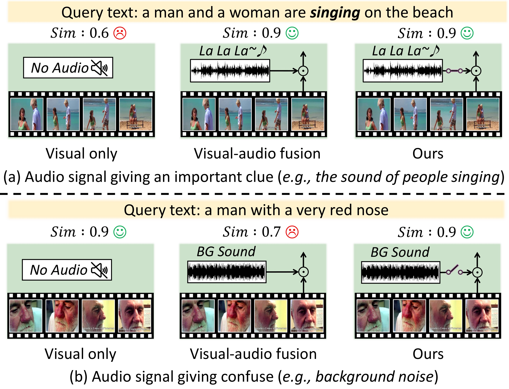
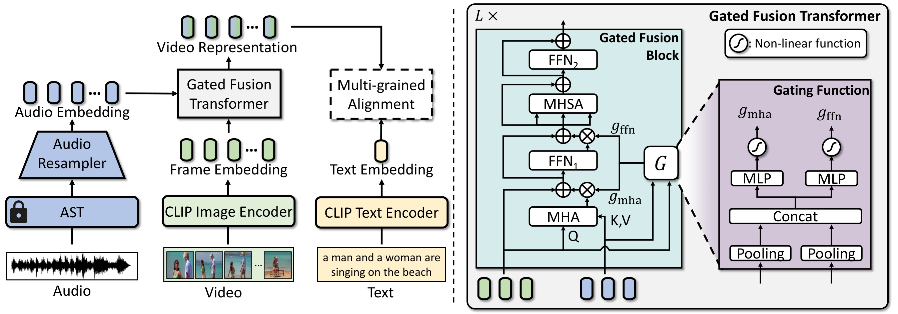
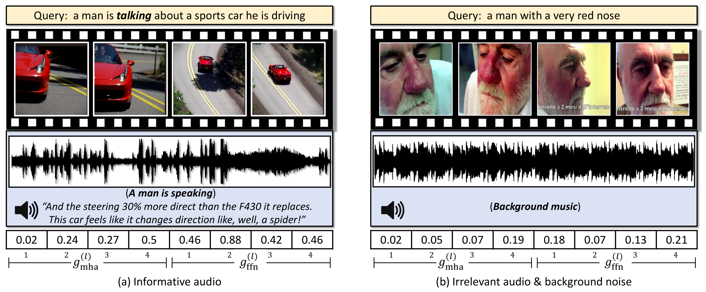

비디오를 검색할 때 텍스트 쿼리와 가장 잘 맞는 영상을 찾으려면 뭘 봐야 할까? 당연히 화면이 핵심이지만, 경우에 따라서는 오디오가 결정적인 단서가 되기도 한다. "남자가 스포츠카에 대해 이야기하고 있는" 영상을 찾는다면, 시각적으로는 비슷한 영상이 수두룩하겠지만 실제로 말하는 소리가 들리는 영상만이 정답이다.
반대로, 배경 음악만 흘러나오는 영상에서 오디오를 억지로 섞으면 오히려 방해가 된다. **AVIGATE (CVPR 2025)**는 이 문제를 정면으로 다룬다 — 오디오가 도움이 되는 순간에만 섞고, 그렇지 않으면 과감히 무시하는 게이팅(gating) 메커니즘을 제안한다.
Introduction
흐름: 비디오-텍스트 검색의 현황 → 오디오를 무시한다는 문제 → 오디오가 항상 도움이 되지 않는다는 더 깊은 문제 → AVIGATE의 제안
비디오-텍스트 검색, 오디오를 잊고 있다
비디오에는 시각·텍스트·오디오 세 모달리티가 공존하지만, 기존 연구는 오디오를 대부분 무시한다.
CLIP4Clip, X-Pool, UCOFiA 등 최근의 강력한 비디오-텍스트 검색 모델들은 CLIP의 시각-언어 정렬 능력을 잘 활용하지만, 오디오는 처음부터 배제한다. 비디오는 본질적으로 시청각(audiovisual) 매체인데, 정작 '듣는 것'은 버려두는 셈이다.
오디오를 활용한 선행 연구도 있다. ECLIPSE는 오디오-영상 간 크로스어텐션으로 오디오 가이드 표현을 만들고, TEFAL은 텍스트-오디오, 텍스트-비디오 크로스어텐션을 둘 다 사용한다. 하지만 두 방법 모두 오디오가 항상 유용하다는 가정 위에 설계되어 있다.
오디오가 항상 도움이 되진 않는다
배경음악, 잡음, 관련 없는 환경음 등 오디오가 오히려 검색을 방해하는 경우가 실제로 빈번하다.
"prior fusion methods have limitations, as they fail to handle irrelevant audio, like background noises, which can degrade video representations and hinder cross-modal alignment."

위 teaser 그림이 핵심을 정확히 보여준다. "남자가 빨간 코를 가진" 영상에는 배경 음악만 흐른다 — 이 오디오는 검색에 전혀 도움이 안 된다. AVIGATE는 이 경우 게이팅 점수를 낮게 설정해 오디오를 사실상 무시한다.
AVIGATE의 제안
AVIGATE는 세 가지를 핵심으로 제안한다:
- Gated Fusion Transformer — 오디오의 기여를 동적으로 조절하는 게이팅 메커니즘
- Adaptive Margin-based Contrastive Loss — 의미적 유사도에 따라 마진을 조절하는 대조 학습
- 효율적인 검색 파이프라인 — 텍스트-오디오 상호작용 없이 O(A+V+T) 복잡도 달성
Method
흐름: 모달리티별 임베딩 추출 → Gated Fusion Transformer (게이팅 함수 + 퓨전 블록) → Adaptive Margin 대조 학습 → 글로벌-로컬 유사도 계산
임베딩 추출
영상 프레임은 CLIP 이미지 인코더, 텍스트는 CLIP 텍스트 인코더, 오디오는 AST(Audio Spectrogram Transformer)로 각각 추출한다.
오디오 처리가 특이하다. AST가 Mel-spectrogram을 처리해 $N_a$개의 임베딩을 만드는데, 이걸 그대로 쓰면 프레임 임베딩($N$개)보다 훨씬 많아 계산 비용이 크다. 그래서 Audio Resampler — M개의 learnable query를 쓰는 크로스어텐션 기반 트랜스포머 — 로 고정 길이 $M$개로 압축한다. AST 파라미터는 학습 중 동결.
Gated Fusion Transformer
오디오가 관련 있으면 게이팅 점수를 높여 많이 섞고, 관련 없으면 낮춰 무시한다 — 이 결정을 레이어마다 자동으로 내린다.

Gated Fusion Block
$L$개 레이어를 거치면서 프레임 임베딩 $\mathbf{f}$가 오디오 $\mathbf{a}$와 점진적으로 융합된다. 각 레이어의 퓨전 과정:
$$\mathbf{z}^{(l)} = g_{\text{mha}}^{(l)} \cdot \text{MHA}(\text{LN}(\mathbf{f}^{(l-1)}), \text{LN}(\mathbf{a})) + \mathbf{f}^{(l-1)}$$
$$\bar{\mathbf{z}}^{(l)} = g_{\text{ffn}}^{(l)} \cdot \text{FFN}_1(\text{LN}(\mathbf{z}^{(l)})) + \mathbf{z}^{(l)}$$
여기서 $g_{\text{mha}}$와 $g_{\text{ffn}}$이 게이팅 점수다. 게이팅 점수가 높으면 오디오가 많이 반영되고, 낮으면 residual connection의 원래 프레임 임베딩이 지배한다. 퓨전 후에는 MHSA + FFN으로 표현을 정제한다.
Gating Function
게이팅 점수는 어떻게 계산되냐 — 오디오 임베딩 $\mathbf{a}$와 현재 프레임 임베딩 $\mathbf{f}^{(l-1)}$을 각각 average pooling해서 $\bar{\mathbf{a}}, \bar{\mathbf{f}}^{(l-1)} \in \mathbb{R}^D$를 만들고, 이를 concat한 joint representation $\mathbf{u}^{(l)} \in \mathbb{R}^{2D}$를 두 개의 MLP에 통과시킨 뒤 tanh로 정규화:
$$[g_{\text{mha}}^{(l)},\ g_{\text{ffn}}^{(l)}] = \sigma\Big[\text{MLP}{\text{mha}}(\mathbf{u}^{(l)}),\ \text{MLP}{\text{ffn}}(\mathbf{u}^{(l)})\Big]$$
핵심은 이 게이팅이 별도의 label 없이 대조 학습 신호만으로 학습된다는 점이다. "오디오가 있을 때 검색이 잘 됐으면 게이트를 열어라" 식의 암묵적 학습.
Adaptive Margin-based Contrastive Loss
의미적으로 비슷한 negative pair에는 작은 마진을, 전혀 다른 pair에는 큰 마진을 부여해 대조 학습의 변별력을 높인다.
기존 대조 학습은 모든 negative pair에 동일한 fixed margin을 적용한다. 하지만 생각해보면 — 시각적으로 비슷한 두 비디오의 텍스트 설명도 어느 정도 관련이 있을 가능성이 높다. 이런 pair에 큰 마진을 강제로 주면 오히려 과잉 억제가 된다.
배치 내 negative pair $(V_i, T_j)$에 대해 adaptive margin을 다음과 같이 정의:
$$m_{ij} = \min\left(\lambda \left(1 - \frac{c_{ij}^v + c_{ij}^t}{2}\right),\ \delta\right)$$
여기서 $c_{ij}^v$는 비디오 간 코사인 유사도, $c_{ij}^t$는 텍스트 간 코사인 유사도. 두 pair가 비슷할수록 마진이 작아지고, 전혀 다를수록 마진이 커진다.
글로벌-로컬 유사도
최종 유사도는 글로벌 정렬(average pooled 비디오 임베딩 vs. 텍스트)과 로컬 정렬(프레임별 유사도의 log-sum-exp)을 평균해 계산한다:
$$s = \frac{s_g + s_l}{2}$$
Experiments
흐름: 3개 벤치마크 정량 비교 → 정성적 게이팅 시각화 → 컴포넌트 Ablation → 계산 비용 분석
정량 결과
MSR-VTT, VATEX, Charades 세 벤치마크에서 AVIGATE는 오디오를 활용하는 기존 SOTA(TEFAL)와 오디오 없는 SOTA(UATVR) 모두를 제친다.
| 방법 | 모달리티 | T→V R@1 | V→T R@1 | RSum |
|---|---|---|---|---|
| CLIP4Clip | V+T | 44.5 | 42.7 | — |
| UCOFiA | V+T | 47.3 | 49.4 | — |
| TEFAL | V+T+A | 49.4 | 47.1 | — |
| AVIGATE (ours) | V+T+A | 50.2 | 49.7 | SOTA |
MSR-VTT 9k split, CLIP ViT-B/32 기준. TEFAL 대비 T→V +0.8%p, V→T +2.6%p.
ViT-B/16 백본에서는 격차가 더 벌어진다. VATEX에서는 오디오 없는 UATVR 대비 +1.8%p (R@1), Charades에서도 TEFAL 대비 +0.8%p.
게이팅 시각화

"The gating mechanism responds accordingly, assigning low gating scores to suppress the influence of irrelevant audio signals. This behavior shows that the gated fusion transformer successfully filters out irrelevant audio while using the multi-modal nature of videos only when the audio contributes positively."
Figure 3이 AVIGATE의 핵심을 직관적으로 보여준다. (a)의 스포츠카 설명 영상에서는 레이어별 게이팅 점수가 전반적으로 높고, (b)의 빨간 코 영상에서는 낮다. 모델이 오디오의 유용성을 스스로 판단하고 있다.
Ablation: 컴포넌트 기여도
| 구성 | R@1 | R@5 | R@10 |
|---|---|---|---|
| Baseline (V+T only) | 45.4 | 72.2 | 81.6 |
| + Audio (게이팅 없음) | 47.1 | 73.5 | 82.5 |
| + Gated Fusion | 48.9 | 74.3 | 83.1 |
| + Adaptive Margin | 49.1 | 74.8 | 83.4 |
| Full AVIGATE | 50.2 | 75.9 | 84.3 |
MSR-VTT 9k split, CLIP ViT-B/32 기준 텍스트→비디오 검색.
주목할 점: 게이팅 없이 오디오를 단순히 섞으면 +1.7%p이지만, 게이팅을 추가하면 +3.5%p. 오디오를 무분별하게 넣는 것보다 선택적으로 넣는 것이 훨씬 효과적이다.
계산 효율성
AVIGATE는 TEFAL 대비 14배 이상 빠른 검색 속도를 달성한다.
TEFAL은 텍스트 쿼리가 들어올 때마다 텍스트-오디오, 텍스트-비디오 크로스어텐션을 전체 데이터베이스에 반복 수행해야 한다 — $O(\mathcal{AT} + \mathcal{VT})$. AVIGATE는 오디오-영상 융합을 미리 수행해 video representation을 오프라인으로 저장해두고, 검색 시에는 텍스트 임베딩과 코사인 유사도만 계산하면 된다 — $O(\mathcal{A} + \mathcal{V} + \mathcal{T})$.
마치며
AVIGATE의 핵심 아이디어는 단순하고 직관적이다: 오디오는 항상 좋은 게 아니다. 도움이 될 때만 써라. 게이팅 점수 두 개(g_mha, g_ffn)로 레이어마다 이 결정을 내리고, 그 결정 자체도 대조 학습 신호로 end-to-end 학습된다.
흥미로운 지점은 게이팅이 explicit한 label 없이 학습된다는 것이다. 어떤 순간에 오디오가 중요한지 사람이 직접 알려주지 않아도, 검색 성능이 올라가는 방향으로 게이트가 스스로 학습된다. 반대로, "이 영상 순간은 audio 정보가 핵심이다"라는 명시적인 레이블이 있다면 게이팅 학습이 훨씬 직접적인 supervision을 받을 수 있다 — 이런 레이블을 제공하는 데이터셋이 있다면, AVIGATE의 게이팅 품질을 한 단계 더 끌어올릴 수 있을 것이다.